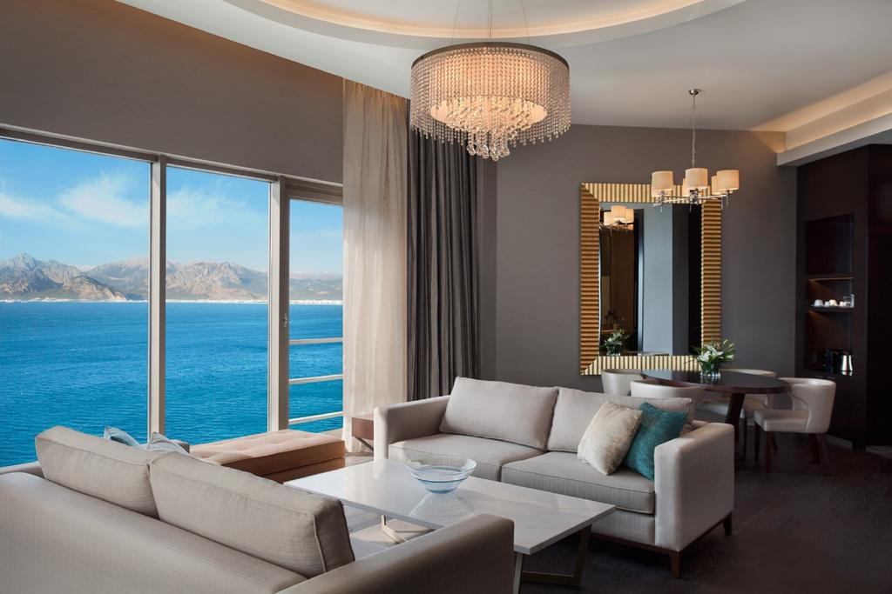
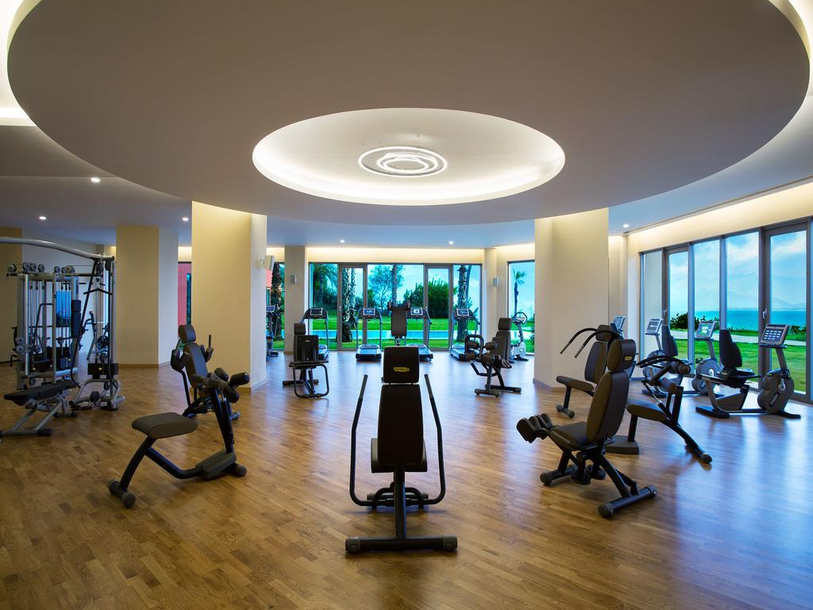

Deniz kıyısında yer alan bu 5 yıldızlı otel, Akdeniz'in sakin ve sıcak atmosferi eşliğinde şehrin hareketli sokaklarının tadını çıkarabileceğiniz şehir merkezinde yer almaktadır.
Akra’nın tüm odalarında Akdeniz veya Toros Dağları manzaralı balkonlar bulunmaktadır. Çağdaş tarzdaki odalarda düz ekran uydu TV ve ücretsiz Wi-Fi bulunmaktadır.
Akra Hotel'de çok sayıda restoran ve bar bulunmaktadır. Pablito Bistro'da Türk ve dünya mutfaklarından seçkin yemekler servis edilmektedir. Deniz ürünleri, taze yapılmış ekmekler, pizzalar, ızgara yemekler ve makarnalar dahil olmak üzere çeşitli yemeklerin tadını çıkarabilirsiniz. Organik yiyecekler ve çeşitli atıştırmalıklar sunulmaktadır.
Muhteşem Bey Dağları, Akdeniz ve şehir manzarasına sahip Asmani Restaurant, otelin 10. katında yer almaktadır.
Sağlıklı yaşam merkezinde sauna, Türk hamamı ve çeşitli masajlar sunulmaktadır. Konuklar iyi donanımlı spor salonunda egzersiz yapabilir veya tesisin kortlarında tenis oynayabilir.
Akra Hotel, Terracity Alışveriş Merkezi'ne ve çok sayıda kafe ve barın bulunduğu eski kent bölgesine 3 km uzaklıktadır. Antalya Uluslararası Havaalanı yaklaşık 15 km uzaklıktadır. Otel bünyesinde ücretsiz otopark mevcuttur.
Özellikle uyumlu çiftler arasında popüler: İki kişilik bir gezi için 9.3 puan verildi.
Dilinizi konuşuyoruz!

4 Yüzme havuzu (Şu anda 3'ü açık)
Havalimanı shuttle'ı
Plaj
Sigarasız odalar
Spa ve iyilik merkezi
Fitness odası
Bar
Ücretsiz Wi-Fi
Copyright © Gencay Çalışkan